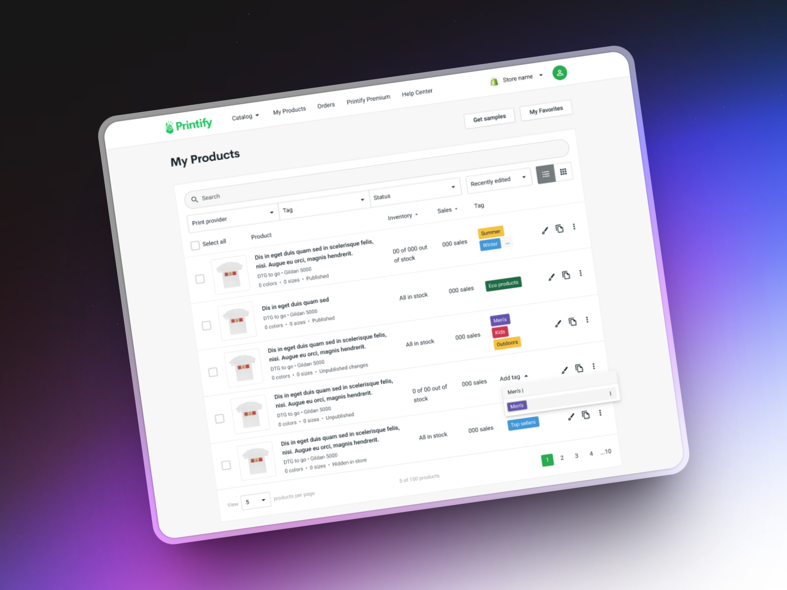
While for some it might be tempting to increase user engagement on their product, it wasn't the case for us. Printify is a productivity tool - a place where you can create and manage your online merchandise. We knew our users are very busy, so we need to let them achieve their goals as quickly and easily as possible. So that they can spend their time on increasign the revenue instead.
"The more successful our users are, the more successful we are as a company."
I interviewed 7 merchants to find out what needs, pains and desires they had with the product management. I was interested in the key actions users make on the product dashboard, such as naming, searching, looking at images and also open to hear what was missing to make their experience better.
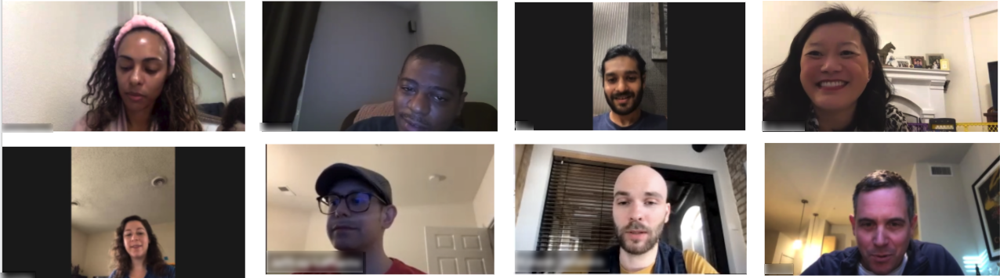
There was a lot of tagging the transcripts, combining and synthesizing insights afterwards. As the team had limited time and resources we really wanted to separate the "painkiller" problems and focus on those first.
The first version of product dashboard was filled with assumptions and lacked user validation. We found out that users mental model was quite different from the implementation model.
These issues were hurting the growing merchants as increase in revenue correlates with the increase in the product count.
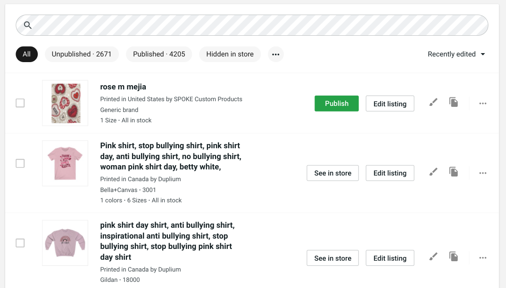
We also knew that merchants used long product titles for SEO and discoverability, which made them all too similar.
I took a collaborative path and involved engineers into the solution discovery early on. I had some ideas of my own, but I like to get diverse perspectives together and see what comes out in the end. As COVID was in full swing I led a remote workshop to align on core user problems and brainstorm solutions together.
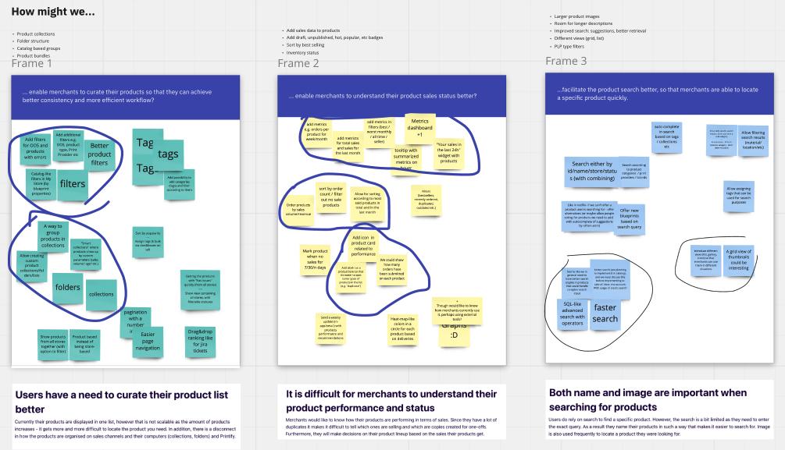
After putting the ideas together, an opportunity solution tree emerged. This way we could see an overview of what initiatives we have and what assumptions to validate for each of them. Also, it served as a good reminder to ditch the ideas that aren't worth pursuing since all that matters is the outcome, not the output.
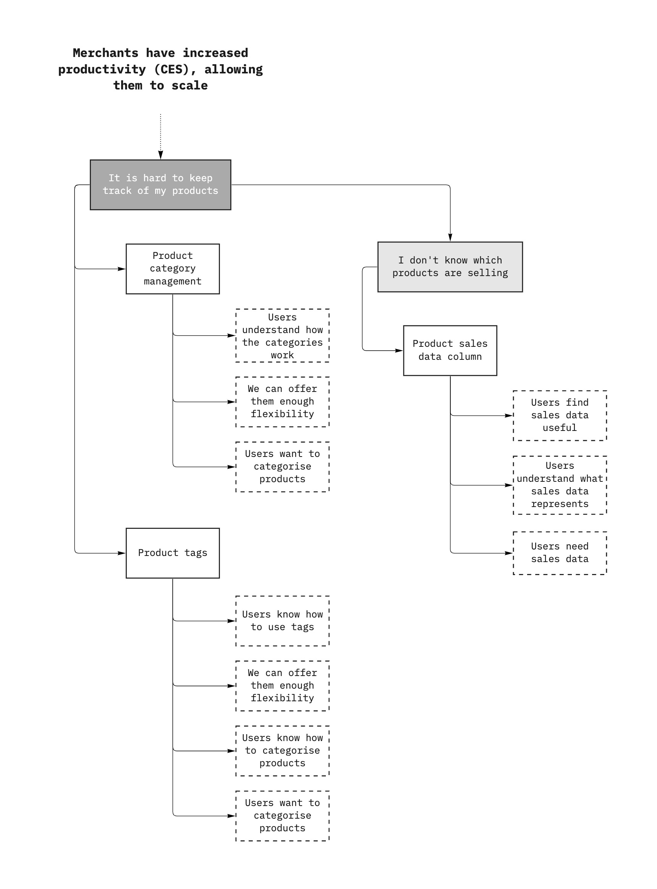
To test these assumptions I had to create various prototypes that would allow us to quickly learn whether an idea is usable, viable, desirable and feasible. Started with sketching on paper and later moved to interactions on Figma.
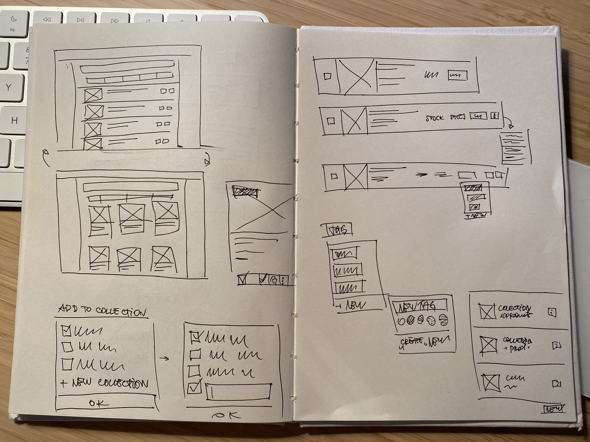
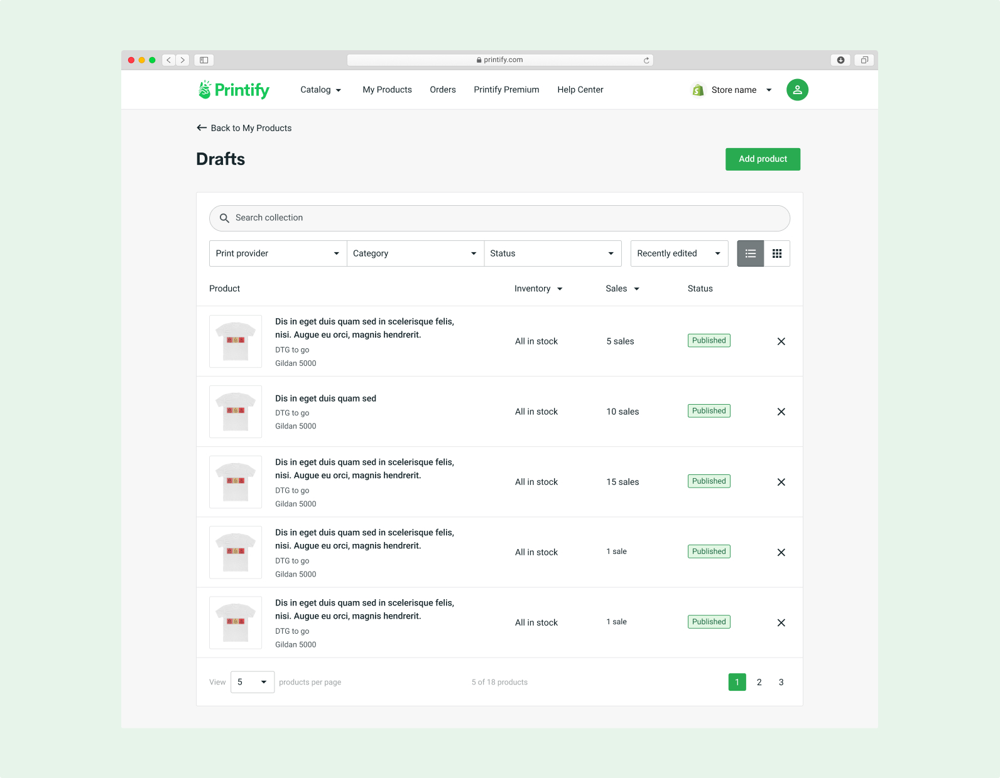
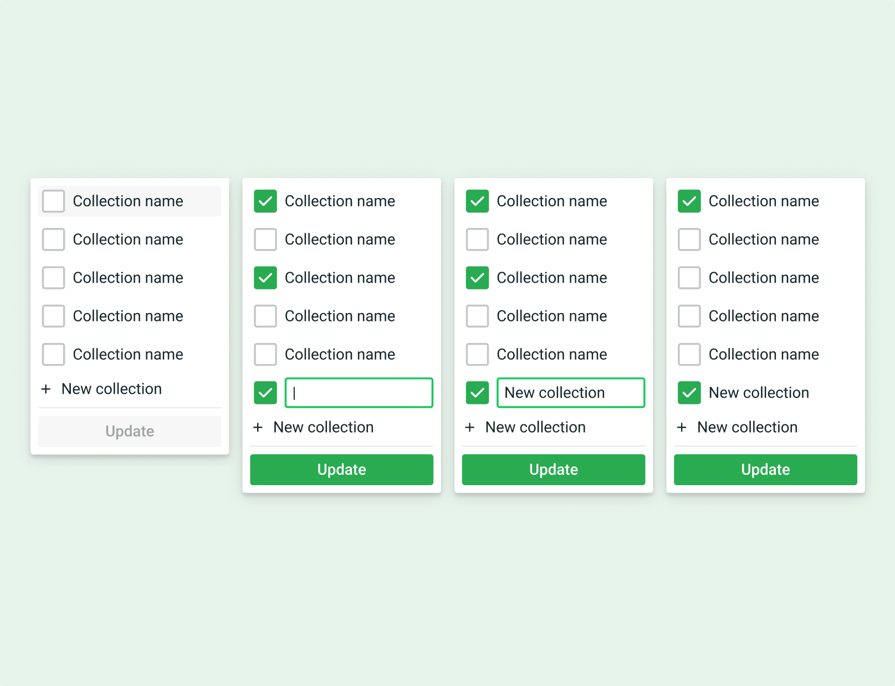
Then I tested the designs with more merchants. Here I was looking to validate my usability and desirability assumptions (do they understand how it works, and whether they actually need to address these issues right now). Feasibility and viability assumptions were validated with internal stakehodlers.
After the user and internal validation we landed on a set of features that worked with users and we were able to deliver. Instead of releasing it all at once we took several steps to roll out all the new features while measuring the impact on conversions via AB test.
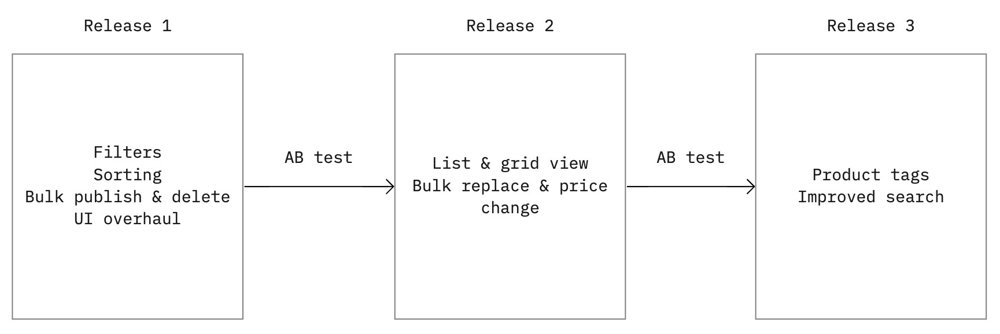
One key change was to enable users to work in bulk actions, thus saving time on common yet mundane and repetitive taks.
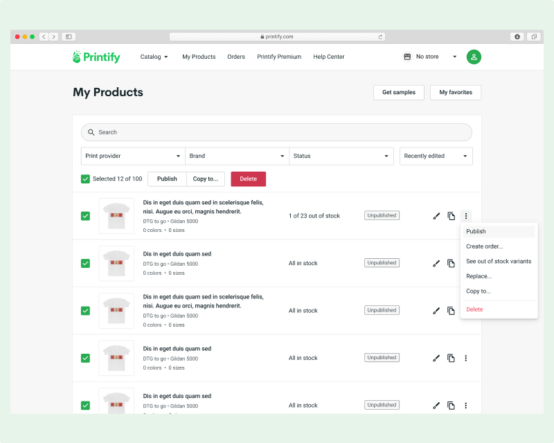
In addition we introduced several new ways to manage products, such as adding tags and filters. Stock and sales info had to be displayed clearly yet without being distracting.
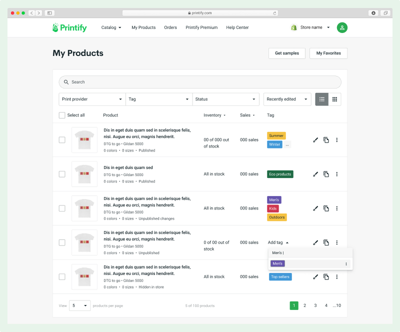
As we learned that seeing a clear image was important to some users, we added a way to view products by grid. This way the image was easier to see in detail without having to click to zoom in.
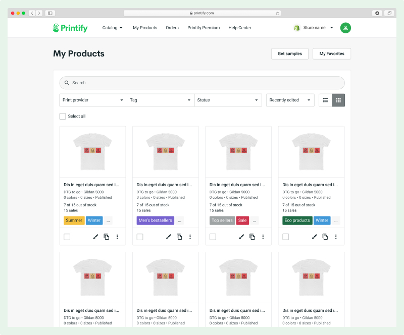
After launching this to all users I learned that as we truncated the product names, some of that hidden information would still be valuable to users. So a quick iteration followed where we added a dotted line indicating that hovering the product name would reveal the full name in a tooltip.
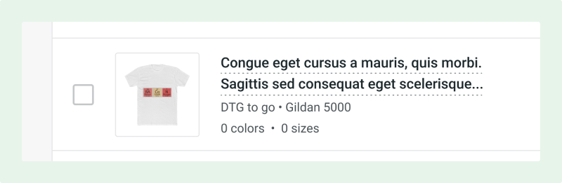
Now, lets go back to the desired product outcome (more productive merchants). Our hypothesis was that this leading KPI would correlate with increased revenue for our merchants (lagging KPI). We measured the time to initiate a "product management action", such as replacing a product, or creating a duplicate. As a result, merchants spent 50% less time to trigger a product management action.
This let us achieve our target to reduce the overhead for merchants and get the messy products out of their way.These are just the basiscs to improve the user experience. I would like to continue exploring how we can deliver more useful sales and data insights to merchants so that they can make better product decitions. This is what they try to collect already in spreadsheets and various other tools, so having a centralised space for it seems like a good opportunity to explore.